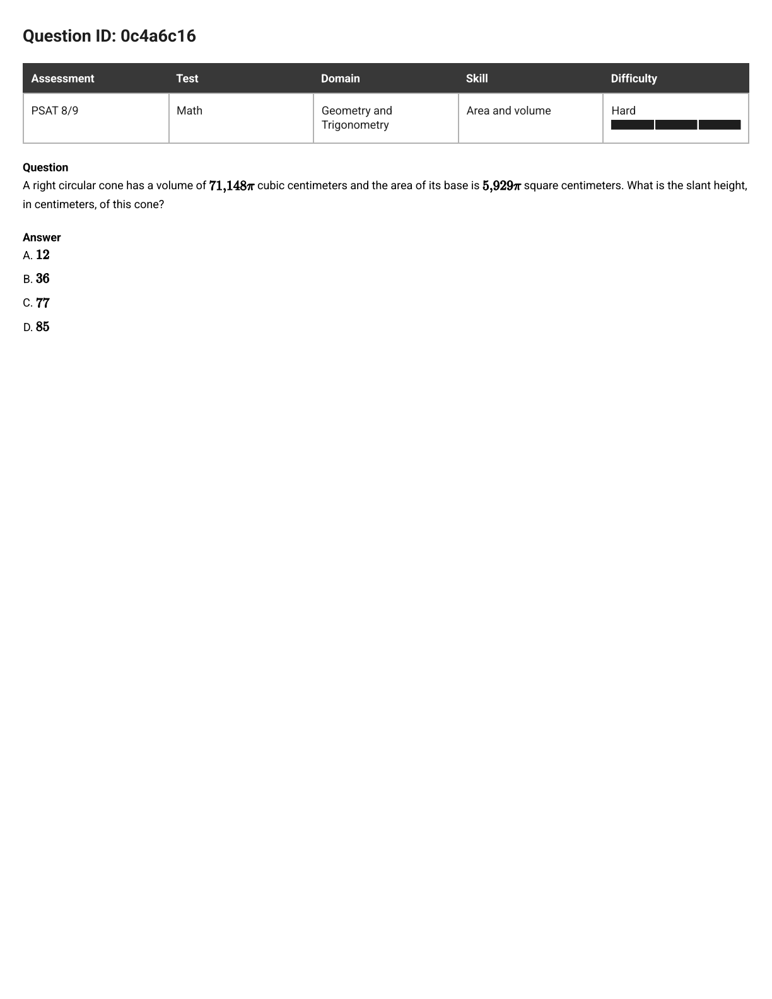
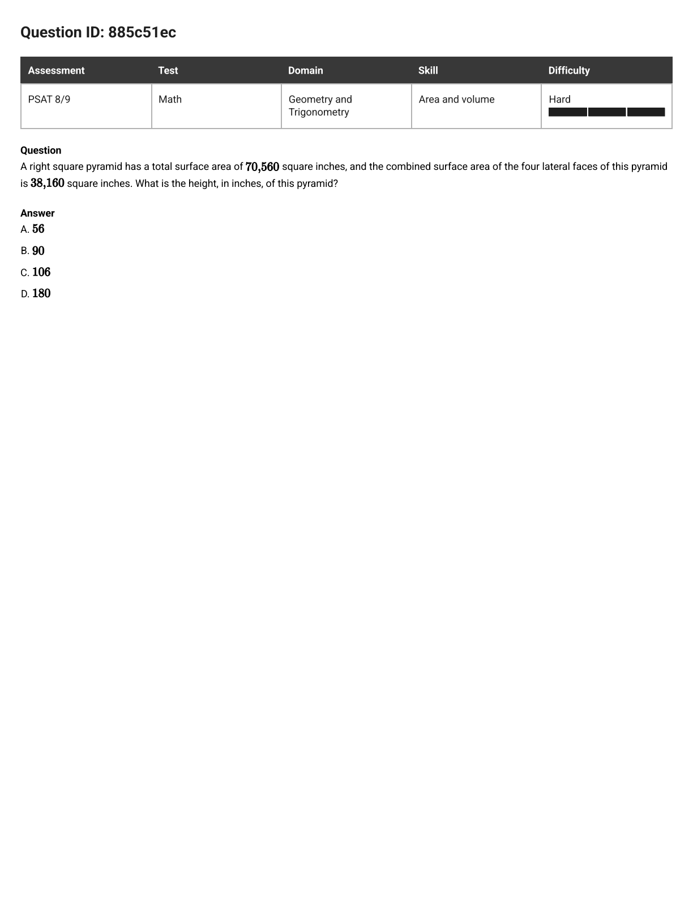
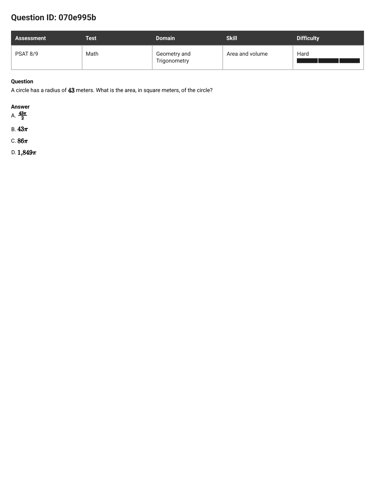
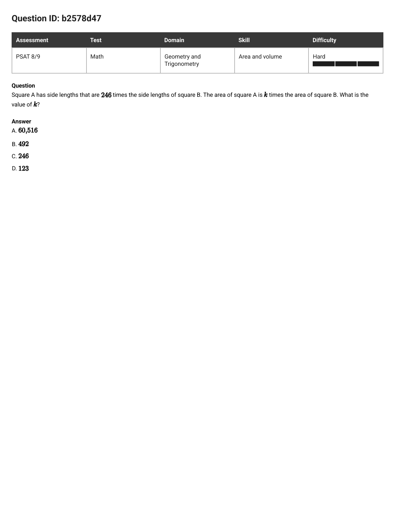
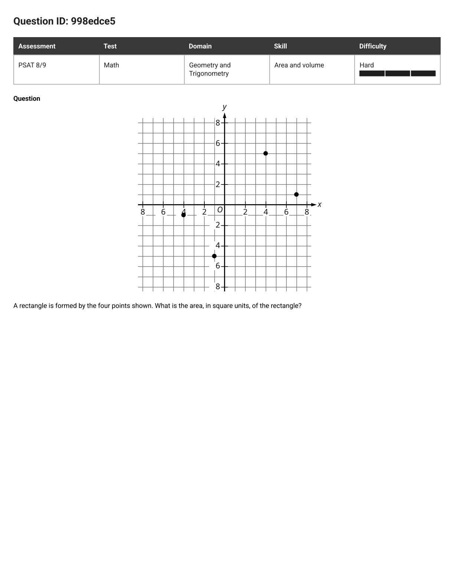
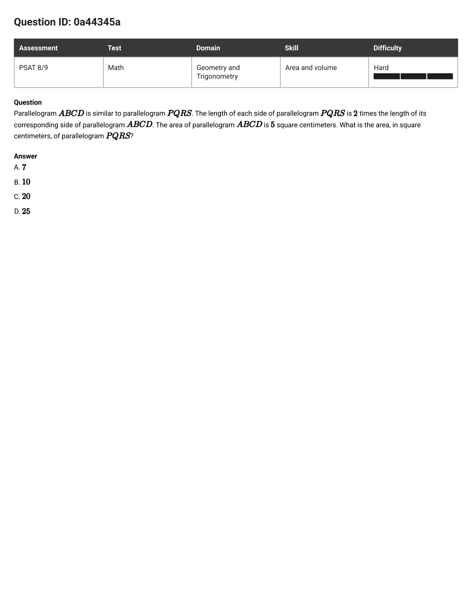
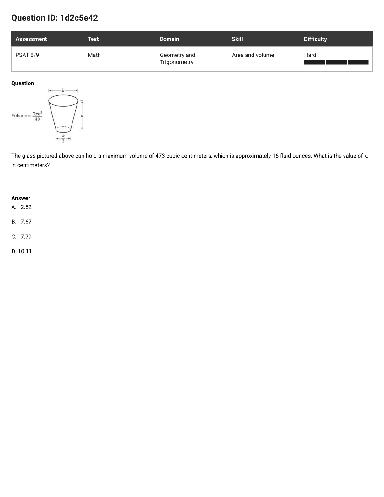

PSAT 8/9 · Area and volume · 6 misses, one model
Six hard misses, one shared slip: every question handed you a number in one dimension and asked for something in another — a height hiding in a volume, an area hiding in a side factor. Every wrong answer is what you get by skipping exactly one unwrap. Four steps close the gap.
Read the unit, not the story. cm is a length (power 1), cm² is an area (power 2), cm³ is a volume (power 3). Say it out loud: "they want a length." Two of the six misses below ask for a length while handing you only areas and volumes — and the other four still force you to cross dimensions to get there. That mismatch is the question.
Undo whatever the shape did to its lengths: subtract the faces you don't need, multiply away the ⅓, square-root an area back to a side, measure dot to dot. Keep peeling until every number you hold is a length. The cone miss needs two peels (volume → height → radius); the pyramid miss needs three.
Sides ×k → area ×k² → volume ×k³. A radius goes into πr² squared. No number crosses from one dimension to another unchanged — that illegal crossing is exactly what the circle miss (43 → 43π) and the squares miss (246 → 246) charge full price for.
| Lengths × | Areas × | Volumes × |
|---|---|---|
| 5 | 25 | 125 |
| 2 | 4 | 8 |
| 246 | 60,516 | — |
Ten seconds: does the unit match step 1? Is the slant the longest line in the cone? Does cubing your answer return the given volume? Is your area factor wildly bigger than your side factor (it must be)? Every trap on this page dies to one of these.
Forgot to Square. Glued π onto the bare radius (43π), or copied the side factor straight across (246, and the parallelogram's 10). The ten-second kill: no ² anywhere — dead.
Doubled-or-Halved. Swapped squaring for ×2 or ÷2: 86π, 492, 123, 43π/2. The kill: doubling is a length move, and this question lives in squares.
Stopped One Peel Early. Answered with a middle number: the cone's height (36) or face number (106), half the base side (90), X's own volume (10), the area ratio (25). The kill: ask "is this the unit step 1 named?" — if it still needs unwrapping, keep going.
Grabbed the Wrong Length. A real length from the right shape answering the wrong question: the cone's radius (77), the pyramid's base side (180). The kill: point at the segment the question names — is your number that segment?
Boxed the Tilt. Drew straight horizontal-and-vertical sides around a tilted shape and multiplied those. The kill: if the sides aren't flat on the grid, no side length equals an x -or-y difference — measure dot to dot.

The question as it appeared
A right circular cone has a volume of 71,148π cubic centimeters and the area of its base is 5,929π square centimeters. What is the slant height, in centimeters, of this cone?
In plain words: they hand you a volume and an area, but the answer is a length — so you unwrap twice, then climb one triangle.
A cone's volume is a third of (base × height): V = ⅓Bh. Undo it — multiply by 3, divide by the base:
The πs cancel first, then 3 · 71,148 = 213,444, and 213,444 ÷ 5,929 = 36. You now hold one length: height 36. But the question wants the slant — keep peeling.
The base is a circle: πr² = 5,929π, so r² = 5,929 and r = 77. Second length in hand. Now build: height, radius, and slant form a right triangle, so
D — 85.
Strip did the work twice (volume → 36 → 77), then one right triangle built the answer.
S3, Stopped One Peel Early — then peeled air. 12 is 36 ÷ 3: the ⅓ undone twice. Ten-second kill: you already divided by the third when you multiplied by 3 — and a 12-cm slant can't span a base of radius 77.
S3, Stopped One Peel Early. 36 is the height — a genuine length from the right shape, but the question asked for the slant. Kill: point at the slant on an imaginary cone. Is 36 that segment? No — it's the straight-down one.
S4, Grabbed the Wrong Length. 77 is the radius — again a real length, again the wrong segment. Kill: the slant must beat every other line in the cone, and 77 ties the radius instead of beating it.

The question as it appeared
A right square pyramid has a total surface area of 70,560 square inches, and the combined surface area of the four lateral faces of this pyramid is 38,160 square inches. What is the height, in inches, of this pyramid?
In plain words: the height sits at the bottom of three wrappers — subtract, square-root, then climb one triangle.
Total = sides + base, so base = 70,560 − 38,160 = 32,400. The base is a square, so un-square it: side = √32,400 = 180. Half of that — the distance from the middle of the base to the middle of one edge — is 90.
One triangle face has area 38,160 ÷ 4 = 9,540. Its base is the 180 side, so ½ · 180 · m = 9,540 gives the face's slant m = 106. That slant is the hypotenuse of a small right triangle whose other leg is the 90 from step 1:
A — 56.
Strip did the work three times (subtract → square-root → un-triangle), and each peel's answer was sitting in the choices waiting to be grabbed early.
S3, Stopped One Peel Early. 90 is half the base edge — a helper number, not a height. Kill: 90 runs flat along the ground; the question asked for straight up.
S3, Stopped One Peel Early. 106 is the face's slant, not the pyramid's height — the cone miss's 36 wearing a new hat. Kill: the face slant leans; the height stands straight. A leaning line is always longer.
S4, Grabbed the Wrong Length. 180 is the base side — the biggest number on the page, and a whole different segment. Kill: point at the height. Now point at the base edge. Different arrows, different numbers.
The question as it appeared
Right rectangular prism X is similar to right rectangular prism Y. The surface area of right rectangular prism X is 58 square centimeters (cm²), and the surface area of right rectangular prism Y is 1,450 cm². The volume of right rectangular prism Y is 1,250 cubic centimeters (cm³). What is the sum of the volumes, in cm³, of right rectangular prism X and right rectangular prism Y?
In plain words: you know how the skins compare and how one gut measures — climb the ladder from skin to length to guts, then add.
Surface areas compare as 1,450 ÷ 58 = 25. But that 25 lives in squares (power 2). Square-root it to cross down to lengths:
Every edge of Y is 5 times the matching edge of X.
Climb back up to cubes: volume factor = 5³ = 125. So Y's 1,250 is 125 X-boxes, and one X-box is 1,250 ÷ 125 = 10. The question asked for the sum:
1260.
Power did the work twice — square-root down (25 → 5), cube back up (5 → 125) — and Ask collected the sum at the end instead of stopping at X's volume.
S3, Stopped One Peel Early. The skin ratio, answered as if it were the volume ratio. Kill: 25 wears a ² and the answer needs a ³ — wrong power, wrong rung.
Answered half the question. X's volume is correct — and it isn't what was asked. Kill: re-read the last line. "Sum" means add Y back in.
Stopped One Peel Early. The volume factor, never multiplied onto a real volume. Kill: 125 is smaller than Y's volume alone — a sum of two positive volumes can't shrink.
Echoed the question. Y's volume, copied straight down. Kill: the sum must beat each part — anything ≤ 1,250 is dead on arrival.
Same model, fresh numbers. Cover each answer, run Ask → Strip → Power → Check out loud, and only then open the reveal. Name the trap species on every wrong choice before you peek.
070e995b · Hard · multiple choice

A circle has a radius of 43 meters. What is the area, in square meters, of the circle?
D — 1,849π. Power did the work: π · 43² = 1,849π. B is S1 (Forgot to Square — no ², dead), A is S2 (halved for no reason), C is S2 (that's the circumference, 2 · 43 · π — a length, and the question asked for an area). Ten-second kill for the whole question: the answer must contain 43 squared.
b2578d47 · Hard · multiple choice

Square A has side lengths that are 246 times the side lengths of square B. The area of square A is k times the area of square B. What is the value of k?
A — 60,516. Power did the work: sides ×246 means area ×246², and 246² = (250 − 4)² = 62,500 − 2,000 + 16 = 60,516. C is S1 (copied the side factor across unchanged), B is S2 (doubled), D is S2 (halved). The Check that ends it: an area factor must be wildly bigger than its side factor — only A is.
998edce5 · Hard · free response

A rectangle is formed by the four points shown: (4, 5), (7, 1), (−1, −5), and (−4, −1). What is the area, in square units, of the rectangle?
50. Strip did the work — dot to dot, not across the axes. From (4, 5) to (7, 1): across 3, down 4, so the side is √(9 + 16) = 5. From (7, 1) to (−1, −5): across 8, down 6, so the side is √(64 + 36) = 10. Area = 5 · 10 = 50. The S5 Boxed-the-Tilt answer multiplies the flat spans (11 wide × 10 tall = 110) — sides that aren't the rectangle's sides.
0a44345a · Hard · drill from a question you got right

Parallelogram ABCD is similar to parallelogram PQRS. The length of each side of parallelogram PQRS is 2 times the length of its corresponding side of parallelogram ABCD. The area of parallelogram ABCD is 5 square centimeters. What is the area, in square centimeters, of parallelogram PQRS?
C — 20. Power did the work: sides ×2 means area ×2² = ×4, so 5 · 4 = 20. B is S1 (doubled instead of squared), A added the 2 onto the 5 (length thinking in a squares question), D squared the wrong number (5² — the 5 was already an area, and areas don't get squared again).
1d2c5e42 · Hard · stretch drill from a question you got right

The glass pictured above can hold a maximum volume of 473 cubic centimeters, which is approximately 16 fluid ounces. The diagram labels the top width and the height as k, the bottom width as k/2, and gives Volume = 7πk³/48. What is the value of k, in centimeters?
D — 10.11. Strip did the work, backwards through a cube: 7πk³/48 = 473, so k³ = 473 · 48 / 7π ≈ 1,032 and k ≈ 10.11 (10³ = 1,000 — the right neighborhood). C is the cube root of the raw 473 — the whole formula skipped. A is the cube root of 16 — the fluid-ounce distractor, in the wrong unit entirely. Step 4 ends it: cube your pick and check it lands on 473; only D does. And notice the 16 fluid ounces never entered the math — Ask threw it out at step 1.